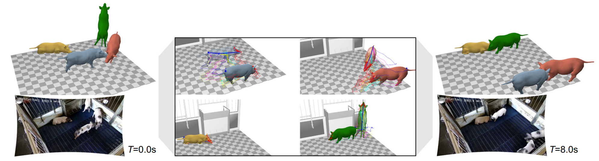

Nature Communications 2023
Three-dimensional surface motion capture of multiple freely moving pigs using MAMMAL
Liang An1, Jilong Ren2,3, Tao Yu1,4, Tang Hai2,3*, Yichang Jia5,6,7* Yebin Liu1,8*
1 Department of Automation, Tsinghua University, Beijing, China. 2 State Key Laboratory of Stem Cell and Reproductive Biology, Institute of Zoology, Chinese Academy of Sciences, Beijing, China. 3 Beijing Farm Animal Research Center, Institute of Zoology, Chinese Academy of Sciences, Beijing, China. 4 Tsinghua University Beijing National Research Center for Information Science and Technology (BNRist), Beijing, China. 5 School of Medicine, Tsinghua University, Beijing, China. 6 IDG/McGovern Institute for Brain Research at Tsinghua, Beijing, China. 7 Tsinghua Laboratory of Brain and Intelligence, Beijing, China. 8 Institute for Brain and Cognitive Sciences, Tsinghua University, Beijing, China. * Corresponding author
Abstract
Understandings of the three-dimensional social behaviors of freely moving large-size mammals are valuable for both agriculture and life science, yet challenging due to occlusions in close interactions. Although existing animal pose estimation methods captured keypoint trajectories, they ignored deformable surfaces which contained geometric information essential for social interaction prediction and for dealing with the occlusions. In this study, we develop a Multi-Animal Mesh Model Alignment (MAMMAL) system based on an articulated surface mesh model. Our self-designed MAMMAL algorithms automatically enable us to align multi-view images into our mesh model and to capture 3D surface motions of multiple animals, which display better performance upon severe occlusions compared to traditional triangulation and allow complex social analysis. By utilizing MAMMAL, we are able to quantitatively analyze the locomotion, postures, animal-scene interactions, social interactions, as well as detailed tail motions of pigs. Furthermore, experiments on mouse and Beagle dogs demonstrate the generalizability of MAMMAL across different environments and mammal species.
[paper] [code]

Illustration of the results. Our MAMMAL system tracks the articulated pig meshes from multiple-view videos. The system is built in a natural captive environment, and is the first system to record pig social motions in 3D. Our final goal is to equip scientists with a AI-powered new tool to assess animal models in an automatic and efficient way.
Technical Paper

Video of the Pipeline
Citation
Liang An, Jilong Ren, Tao Yu, Tang Hai, Yichang Jia and Yebin Liu. "Three-dimensional surface motion capture of multiple freely moving pigs using MAMMAL". Nature Communications 2023
@article{An2023MAMMAL,
title={Three-dimensional surface motion capture of multiple freely moving pigs using MAMMAL},
author={An, Liang and Ren, Jilong and Yu, Tao and Hai, Tang and Jia, Yichang and Liu, Yebin},
journal={Nature communications},
volume={14},
number={1},
pages={7727},
year={2023},
publisher={Nature Publishing Group UK London}
}